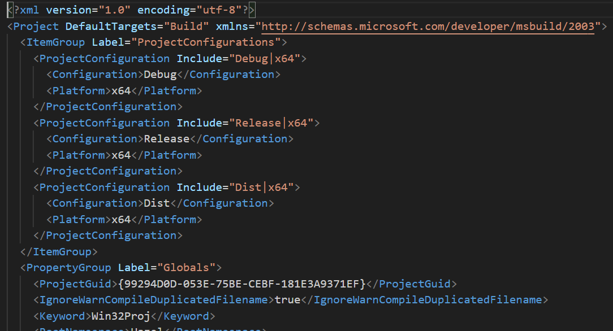
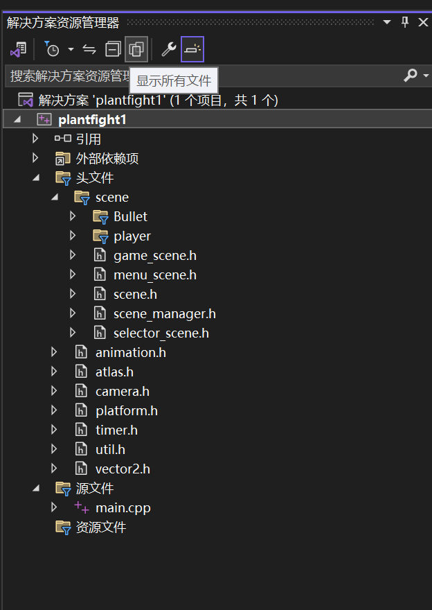
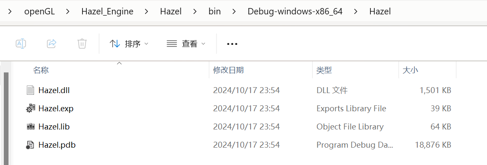
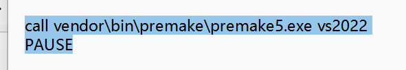

HazelEngine笔记3
premake是一个开源的脚本生成工具，利用lua脚本自定义项目配置，自动生成对应的的IDE和编译器的构建文件。至于能配置哪些，我会从项目的配置文件中解释，而不是一一列举了。
由于我生成的vs的文件，所以在此之前我们可以看看vs有哪些配套（除去源代码）的文件。
- 项目的配套文件
每个项目里都会有以下几个文件
我们分别来看看各自文件的作用
.vcxproj文件是 Visual Studio 单个项目的核心配置文件，其中存储的重要的构建和配置信息。例如文件路径，平台配置，构建配置（debug还是release），外部依赖项等等我们可以在项目属性中的配置的一些东西都放在里面。
.user文件通常是一个用户特定的配置文件，用于存储与用户偏好和开发环境相关的设置。
文件采用了XML的格式，开头声明了XML文件的版本和编码方式（utf-8中文好像会乱码）
然后便是<Project> 标签定义了一个 MSBuild 项目，然后<PropertyGroup> 用于定义项目的属性。在这里，<ShowAllFiles> 设置为 true，表示在 Visual Studio 中显示所有文件。
.filters文件用于 Visual Studio 的项目组织，帮助开发者在解决方案资源管理器中将文件分组显示。它的文件名通常是项目文件的名称，后缀为.filters，例如MyProject.vcxproj.filters。
组织文件结构：例如，在 C++ 项目中，.filters 文件可以让你在 Visual Studio 的解决方案资源管理器中将头文件、源文件、资源文件分组。
虚拟文件分组：.filters 文件只影响 Visual Studio 中的文件显示，并不会影响物理文件夹结构，帮忙规整。
提高项目可读性：方便开发者快速找到项目中不同类型的文件。
当我们创建vs解决方案的时候倘若不点击“显示所有文件”，那么当前目录都是虚拟的文件夹，只有点开显示所有文件，才能创建真正的物理文件结构。
- 项目的中间文件和输出文件。
在每个项目的编译过程中都会有中间文件的产生和最终输出文件的产生。
默认都在项目的bin文件内，当然可以自己在项目的属性文件中配置，例如当前的dll文件。
- 隐藏的.vs文件
在 Visual Studio 项目中，.vs 文件夹是一个隐藏文件夹，用于存储与项目和开发环境相关的本地配置和临时文件。它通常位于项目的根目录中，但不会包含在源代码管理（如 Git）中，因为它只在本地环境中使用，不影响项目的实际代码或构建。
.vs 文件夹的作用
- 存储调试和窗口布局配置：包含调试信息、窗口布局和设置等，使你每次打开项目时都能看到上次离开时的开发环境。
- 调试缓存文件：在调试时，Visual Studio 会将缓存数据存储在
.vs文件夹中，比如断点和调试配置。 - 解决方案的用户设置：
.vs文件夹中有一个.suo文件（Solution User Options），用于保存用户的个人配置，比如最后打开的文件、窗口布局和书签等。 - IntelliSense 缓存：该文件夹中有时候会包含 IntelliSense 的缓存数据，这些数据用于加速代码分析和自动补全。
.vs 文件夹的常见内容
.suo文件：包含与用户相关的设置。v16、v17等版本文件夹：这类文件夹保存了项目在不同版本的 Visual Studio 中的相关配置。
为什么 .vs 文件夹不应被加入版本控制
.vs 文件夹是特定于用户和本地环境的，它不包含项目的实际代码或资源。如果加入版本控制，会导致不同开发者的本地环境配置冲突。因此，通常在 .gitignore 文件中忽略该文件夹：
然后我们就来看看基本的premake内容都有哪些东西
//定义一个Hazel的工作区，该工作区包含所有项目的配置
workspace "Hazel"
architecture "x64" //项目架构位x64，64位操作系统
//configurations：定义三种构建配置：Debug、Release 和 Dist（发行版本）。
configurations
{
"Debug",
"Release",
"Dist"
}
//首先这是定义一个输出路径的字符串，方便后面使用
//cfg是配置的意思，buildcfg指的是当前构建的配置选项例如Debug，然后是系统Windows，最后是系统架构，都
//是配置的内容
outputdir = "%{cfg.buildcfg}-%{cfg.system}-%{cfg.architecture}"
-- Include directories relative to root folder (solution directory)
//创建一个包含目录的表格，采用字符串映射的方式便捷设置一些路径
//例如这里就是GLFW映射为以下的路径。
IncludeDir = {}
IncludeDir["GLFW"] = "Hazel/vendor/GLFW/include"
//包含外部 Premake 文件，指向 GLFW 库的 Premake 配置（例如 premake5.lua 文件）。
//这就是为什么我们不把GLFW的项目配置写在这里了
include "Hazel/vendor/GLFW"
//定义为Hazel的项目，地址位于根目录的Hazel文件下，指定项目为共享库（DLL文件）指定项目语言为C++
//采用c++的编译器
project "Hazel"
location "Hazel"
kind "SharedLib"
language "C++"
//targetdir：将生成的二进制文件输出到 bin/ 目录下，文件夹结构为 bin/配置-系统-架构/项目名。
//objdir：将中间文件（如 .obj 文件）存放到 bin-int/ 目录下，路径与目标目录相似。
targetdir("bin/" ..outputdir .. "/%{prj.name}")
objdir ("bin-int/" ..outputdir .. "/%{prj.name}")
//pchheader：指定预编译头文件的名称（hzpch.h）。
//pchsource：指定预编译头的实现文件（hzpch.cpp）。
pchheader "hzpch.h"
pchsource "Hazel/src/hzpch.cpp"
//files：指定要包含在项目中的源文件，%{prj.name} 会被替换为 Hazel，因为当前的项目为Hazel
files
{
"%{prj.name}/src/**.h",
"%{prj.name}/src/**.cpp"
}
//includedirs：定义要包含的头文件目录，包括项目的源目录、spdlog 日志库目录和 GLFW 目录。
//就是把需要包含的默认系统查询目录都放进去
includedirs
{
"%{prj.name}/src",
"%{prj.name}/vendor/spdlog/include",
"%{IncludeDir.GLFW}"
}
//links：链接到外部库，包括 GLFW 和 OpenGL（Windows 上的 opengl32.lib）。
links
{
"GLFW",
"opengl32.lib"
}
//平台和配置过滤，
//filter "system"：针对 Windows 平台的配置。
//cppdialect "C++17"：
//将 C++ 语言标准设为 C++17。
//staticruntime "On"：设置运行时库为静态链接。
//systemversion "latest"：使用 Windows SDK 的最新版本
filter "system:windows"
cppdialect "C++17"
staticruntime "On"
systemversion "latest"
//这里是当前项目的预定义宏
defines
{
"HZ_PLATFORM_WINDOWS",
"HAZEL_BUILD_DLL"
}
// 指定了一组在项目编译完成后立即执行的命令。这些命令通常用于将生成的二进制文件复制到特定位置，或执行其他自动化步骤。这里明显是把Hazel生成dll文件复制到Sandbox的文件输出目录下
//postbuildcommands是构建完毕后要执行的命令意思
//%{cfg.buildtarget.relpath}这个是指构建文件目标也是就DLL文件的相对路径
//后面的../bin/" ..outputdir .. "/Sandbox则是输出到当前目录下。
postbuildcommands
{
("{COPY} %{cfg.buildtarget.relpath} ../bin/" ..outputdir .. "/Sandbox")
}
//接下来则是针对不同的项目配置，设置宏和构建选项。
//如果是Debug，则定义一个宏，设置为使用调试版本的动态链接运行时库（/MDd）。启用调试符号（symbol）
filter "configurations:Debug"
defines "HZ_DEBUG"
buildoptions "/MDd"
symbols "On"
//如果是发布版本，定义一个宏，然后/MD：使用发布版本的动态运行时库，启用优化（optimize）
filter "configurations:Release"
defines "HZ_RELEASE"
buildoptions "/MD"
optimize "On"
//HZ_DIST：定义为发行模式。
//MD 和 optimize "On"：启用运行时和优化
filter "configurations:Dist"
defines "HZ_DIST"
buildoptions "/MD"
optimize "On"
//这个我就不多讲了
project "Sandbox"
location "Sandbox"
kind "ConsoleApp"
language "C++"
targetdir("bin/" ..outputdir .. "/%{prj.name}")
objdir ("bin-int/" ..outputdir .. "/%{prj.name}")
files
{
"%{prj.name}/src/**.h",
"%{prj.name}/src/**.cpp"
}
includedirs
{
"Hazel/vendor/spdlog/include",
"Hazel/src"
}
links
{
"Hazel"
}
filter "system:windows"
cppdialect "C++17"
staticruntime "On"
systemversion "latest"
defines
{
"HZ_PLATFORM_WINDOWS"
}
filter "configurations:Debug"
defines "HZ_DEBUG"
buildoptions "/MDd"
symbols "On"
filter "configurations:Release"
defines "HZ_RELEASE"
buildoptions "/MD"
optimize "On"
filter "configurations:Dist"
defines "HZ_DIST"
buildoptions "/MD"
optimize "On"
- 为什么明明是生成dll文件的Hazel项目，选择静态链接运行时库
首先解释一下这二者控制的内容不同，生成dll文件指的是项目导出的函数和数据都可以被其他程序调用。但是导出dll的项目同时也需要运行时库的内容
运行时库是一组支持程序在运行时执行特定功能的库，通常包括标准库、系统函数等代码。它为应用程序提供基本的低层次功能和系统调用接口，使程序能以更高层次的方式编写和执行，而无需重复实现这些底层功能。
例如基本的内存管理，I/O操作，线程等标准库的内用
静态链接指的是这些库是否需要包含在导出的dll文件内，如果不使用静态运行库链接（反之就是动态运行库链接），那么该文件导出的dll必须使用。运行库的dll才能运行，但是选择静态运行库链接，这些就会被直接包含在导出的dll文件，而不需要依赖外在运行库dll了。
vs里面就是这个属性页面配置

Visual Studio 提供以下几种常用选项：
- **
/MD**：动态链接多线程运行时库（Release 版的 DLL 版本）。 - **
/MDd**：动态链接多线程运行时库（Debug 版的 DLL 版本）。 - **
/MT**：静态链接多线程运行时库（Release 版的静态库版本）。 - **
/MTd**：静态链接多线程运行时库（Debug 版的静态库版本）。
选择 /MD 或 /MDd 表示动态链接，选择 /MT 或 /MTd 表示静态链接。
这样就顺便解决了之前的疑惑了。
- premake5.exe是如何找到我们的lua配置文件呢
因为是在配置文件的目录下使用命令行启用，所以搜索路径有显示当前命令行所在的目录。那么glfw的我们显然也是在上面的配置中包含了其目录，自然会查找配置好。
.bat文件使用
.bat 文件是批处理文件（Batch File），是一种用于自动化执行命令行任务的脚本文件。在 Windows 操作系统中，批处理文件包含一系列命令，这些命令会按照它们在文件中的顺序逐行执行。
我们把基本的命令行操作放在bat文件里面，然后双击就会自动调用命令行。于是我们把premake的调用写进去。
call：这是一个批处理命令，用于调用另一个批处理文件或程序。在这种情况下，它确保在调用的程序执行完后，控制权返回到当前批处理文件。
vendor\bin\premake\premake5.exe：这是 premake5.exe 可执行文件的路径，表示在 vendor\bin\premake 目录下。
vs2022：这是传递给 premake5.exe 的参数，指示它生成适用于 Visual Studio 2022 的项目配置。
至此我们只要双击就能自动生成我们自定义配置的项目了。